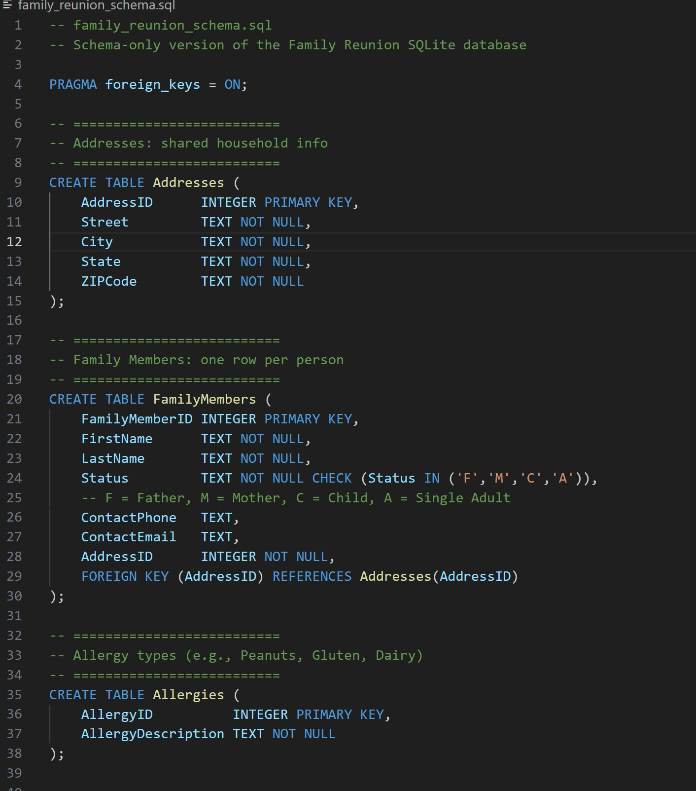
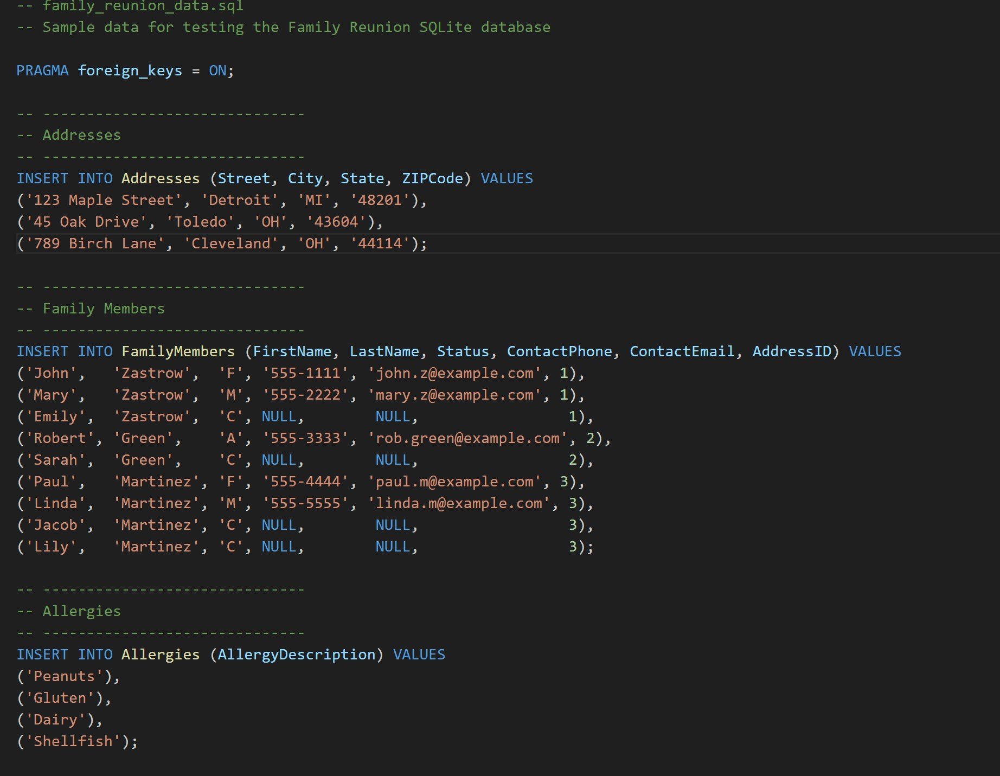
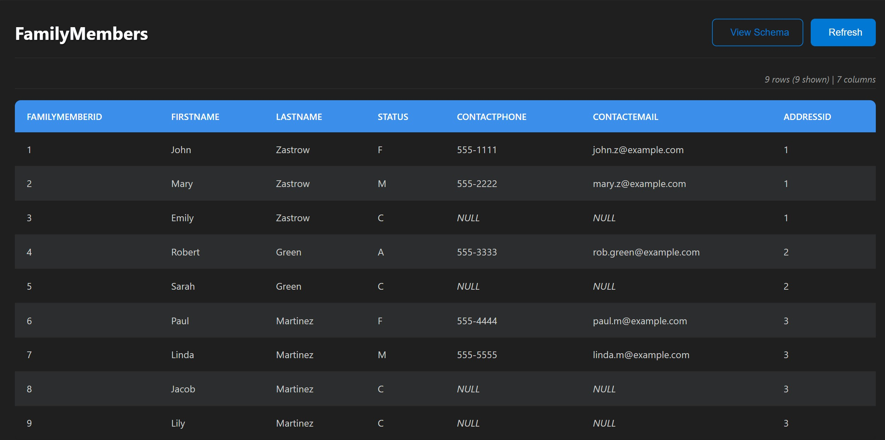
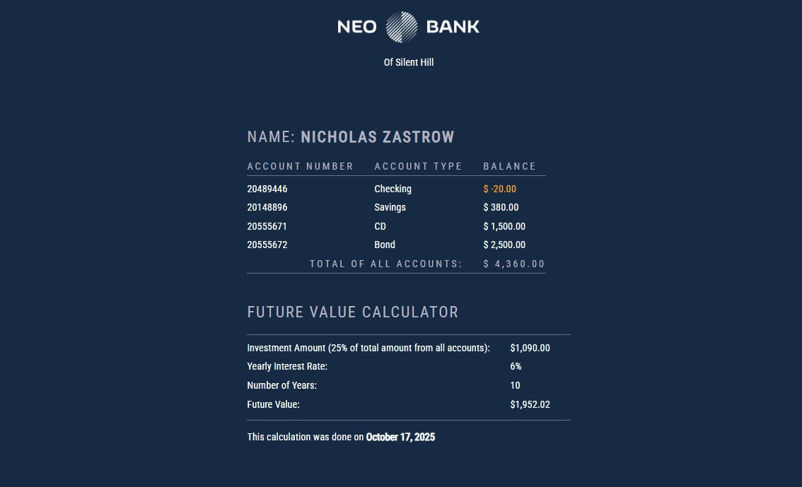
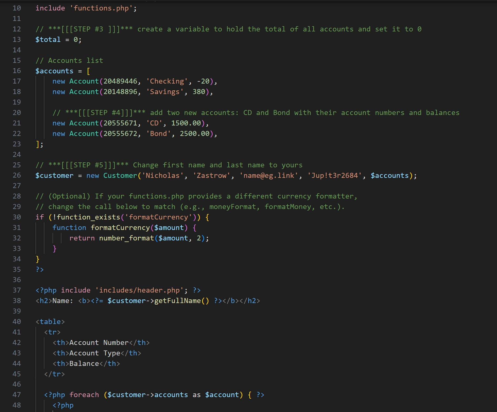
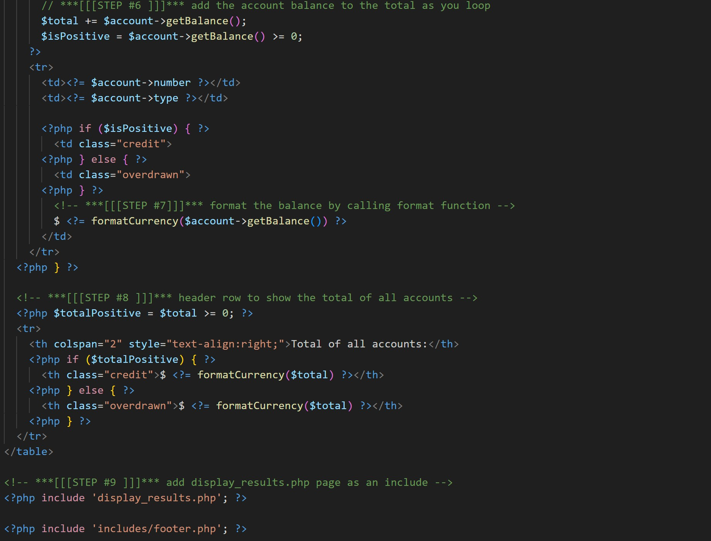

SQL Databases & PHP/MySQL Projects
A pair of projects that focus on designing relational databases in SQL and connecting them to dynamic web pages using PHP and MySQL. Together, they show how data moves from schema and queries to real-world web applications.
SQL Database Projects — Family Reunion Database
The SQL portion of this case study centers on a Family Reunion database. The goal was to design a relational schema that could track family members, contact information, event details, and RSVP data in a way that remained flexible, normalized, and easy to query.
Schema Definition
SQL DDL for creating tables, primary keys, and foreign key relationships between family members, addresses, events, and RSVP records.
Sample Data
Insert statements populate the database with realistic test data so joins and aggregate queries can be exercised.
Queries & Reports
Queries that answer real questions: who’s attending which events, dietary restrictions, and roll-up counts for planning.
These scripts were later adapted to SQLite so the database could be demoed easily without requiring a full SQL Server instance. The structure stayed the same: strong relational design with clear keys and constraints.
PHP/MySQL Projects — Dynamic Web Integration
The PHP/MySQL projects build on the database fundamentals by connecting web front ends to a MySQL backend. The assignments focused on retrieving data from the database, displaying it in styled HTML tables, and performing basic calculations with reusable PHP functions and classes.
Main Application View
A browser view of account data rendered from PHP. Data is pulled from objects or database records and displayed in a clean HTML table.
Midterm Code (Accounts & Customers)
PHP classes and setup code for accounts and customers, including helper functions to format currency and compute totals.
Midterm Code (Output & Table)
Logic that loops through account data and builds the HTML table output, echoing values in a way that stays readable and maintainable.
These projects emphasized keeping presentation and logic reasonably separated: PHP classes and helper functions handle the calculations, while small templates generate the HTML. The end result is more reusable than mixing everything into a single monolithic script.
Key Logic (PHP Loop & Formatting)
A simplified example of how PHP walks account data and formats it for display:
// accounts array created earlier
$total = 0;
foreach ($customer->accounts as $account) {
$total += $account->balance;
echo "<tr>";
echo "<td>" . $account->number . "</td>";
echo "<td>" . $account->type . "</td>";
echo "<td>" . formatCurrency($account->balance) . "</td>";
echo "</tr>";
}
echo "<tr><td colspan='2'><strong>Total</strong></td>";
echo "<td><strong>" . formatCurrency($total) . "</strong></td></tr>";The real project also pulls in includes, classes, and configuration, but this snippet captures the essence: loop over records, keep a running total, and use a helper to ensure currency is consistently formatted.
What I Learned
- How to design relational schemas that support real-world use cases and meaningful queries.
- How to write SQL that joins multiple tables, filters results, and produces useful reports.
- How to connect PHP pages to structured data, whether from objects or database queries.
- How to separate formatting and calculation logic so PHP views stay more maintainable.
- How to think through the full flow: from schema and data to dynamic, user-facing web output.
Explore the Repositories
You can review the full SQL scripts and PHP/MySQL code, including additional exercises and variations, in the GitHub repositories.